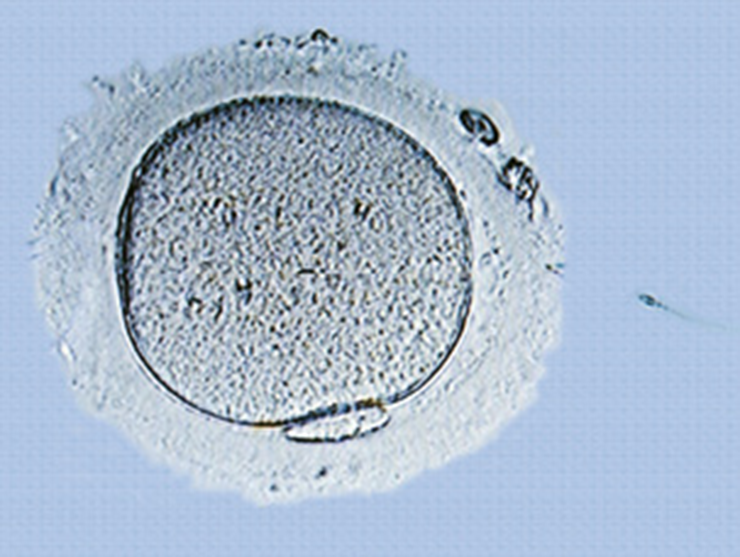

Microscopia da injeção intracitoplasmática de um espermatozoide em um ovócito humano.
[...]
Algumas formas de infertilidade são tratáveis. A terapia hormonal pode algumas vezes aumentar a produção de espermatozoides e de óvulos, e uma cirurgia pode algumas vezes, corrigir dutos que se formam inapropriadamente
ou tornaram-se bloqueados. Em alguns casos, os médicos recomendam a fertilização in vitro (FIV), que envolve a combinação de oócitos e espermatozoide em laboratório. Óvulos fertilizados são incubados até formarem ao menos oito
células e, em seguida, são transferidos ao útero da mulher para implantação. Se os espermatozoides maduros forem defeituosos ou em pouco número, o espermatozoide inteiro ou o núcleo da espermátide é injetado diretamente no
oócito. Apesar de caros, os procedimentos da FIV permitiram a mais de um milhão de casais conceber uma criança.
[...]
REECE, J. B. et al. Biologia de Campbell. 10. ed. Porto Alegre: Artmed, 2015
- Em que local do corpo da mulher ocorre normalmente a fecundação?
- Que regiões existem em um espermatozoide humano?
- Por que os gametas femininos são, geralmente, maiores que os masculinos?
Neste capítulo serão abordadas as habilidades EM13CNT202
digestão da zona pelúcida (camada que envolve o óvulo). O acrossomo também possui proteínas ligantes responsáveis pelo reconhecimento celular, sendo, assim, uma estrutura fundamental para que ocorra a fecundação.
Na
peça intermediária, são encontradas cerca de 70 mitocôndrias com formato espiralado. Elas produzem as moléculas de ATP, ou seja, a forma de energia utilizada para o deslocamento do gameta masculino ao encontro do gameta
feminino. Outra estrutura existente na peça intermediária é o centríolo. Durante a espermiogênese, etapa final da formação dos espermatozoides, um dos centríolos do par se alonga e origina o flagelo existente na cauda
dos espermatozoides. O flagelo, que equivale a 80% do tamanho do espermatozoide, é revestido pela membrana plasmática e apresenta, em seu interior, um conjunto de nove duplas de microtúbulos periféricos mais dois microtúbulos
centrais.
Sherwood, L. Human Physyology. 9. ed. New York: Brooks Cole, 2015.
Representação esquemática de um espermatozoide e de suas estruturas constituintes.
Gameta feminino
Os gametas femininos, denominados óvulos (do latim ovulu, que significa “pequeno ovo”), são maiores que os masculinos e não apresentam estruturas locomotoras. Eles são produzidos nas gônadas femininas, denominadas ovários. Em diversas espécies de animais, o citoplasma dos óvulos contém um material nutritivo, conhecido como vitelo, usado como alimento pelo embrião nos primeiros dias de vida. Os grânulos de vitelo são formados por uma mistura de proteínas e lipídeos, os quais são nutrientes essenciais para a construção das novas células embrionárias.
Gametas
Uma parte dos seres vivos se reproduz de forma assexuada. Nesse tipo de reprodução, não ocorre a mistura de material genético entre os indivíduos da mesma espécie. Os descendentes são geneticamente iguais entre si e ao
parental. Na maioria dos animais, entretanto, existe outra forma de reprodução, denominada sexuada, na qual o cariótipo dos descendentes é resultado da mistura de material genético de dois organismos parentais pertencentes
à mesma espécie e geneticamente diferentes.
A reprodução sexuada nos animais é possível graças à produção de células reprodutivas, ou germinativas, denominadas gametas (do grego gamein, que significa “casamento”).
Os gametas apresentam metade do número total de cromossomos existente na espécie. São produzidos por meiose (divisão reducional), possibilitando que os descendentes herdem o material genético dos parentais sem aumentar
o número de cromossomos da espécie. De forma geral, as espécies animais produzem gametas masculino e feminino.
Gameta masculino
Os gametas masculinos, denominados espermatozoides (do grego sperma, zoon e oide, que significam, respectivamente, “semente”, “animal” e “semelhante”), apresentam motilidade e são menores que os femininos. Eles são produzidos
nos testículos, que são as gônadas masculinas.
Os espermatozoides maduros da maioria dos animais são compostos de três partes: cabeça, peça intermediária e cauda. Na cabeça, encontra-se o núcleo com um lote haploide
de cromossomos paternos que constituirão a metade dos cromossomos do novo organismo caso aconteça a fecundação. Além do núcleo, na região anterior da cabeça, encontra-se o acrossomo, uma vesícula derivada do complexo
golgiense e que ocupa o espaço existente entre a membrana plasmática e o envoltório nuclear. O acrossomo abriga enzimas digestivas, como a hialuronidase, que contribuem na penetração do espermatozoide no gameta feminino,
porque atuam na
Eletromicrografia de varredura de espermatozoides humanos. Tamanho médio: 48 mm.
A. Fotomicrografia de um folículo ovariano humano maduro com destaque para o ovócito, para as células foliculares e para a zona pelúcida ao redor do ovócito. Tamanho médio: 0,13 mm; B. Representação esquemática de um ovócito II. Tamanho médio: 0,1 mm.
Fotomicrografia de um ovócito humano e de um espermatozoide se aproximando dele. Destaque para a zona pelúcida e para o primeiro corpúsculo polar.
Dentro do gameta feminino dos mamíferos, os cromossomos ainda estão duplicados, condensados e alinhados na placa metafásica, ou seja, essa célula está estacionada na metáfase II da meiose e ainda é o ovócito II, e não o
óvulo como nos demais animais. A segunda divisão meiótica terminará apenas depois que o espermatozoide penetrar no gameta feminino e ocorrer a fertilização.
No citoplasma, encontram-se as demais organelas celulares,
com destaque para as mitocôndrias, que serão transferidas ao embrião.
Nos mamíferos, o ovócito fica rodeado por uma fina e frouxa camada de células foliculares, denominada corona radiata. Essas células são derivadas
das células foliculares que formam os folículos ovarianos, estruturas que originam os ovócitos. Entre o ovócito e a camada de células foliculares, encontra-se a zona pelúcida: uma grossa camada gelatinosa de glicoproteínas
aderida à membrana plasmática do ovócito.
MOORE, Keith L.; PERSAUD, T. V. N.; TORCHIA, Mark G.
Embriologia clínica. 9. ed. Rio de Janeiro: Elsevier, 2013. p. 540.
Para impedir que ocorra a fusão de gametas de espécies diferentes, existem moléculas na zona pelúcida que revelam a existência de um eficiente sistema de reconhecimento celular na fecundação dos animais. Um exemplo é a proteína ZP3 presente nos ovócitos humanos, que será estudada mais adiante. Experimentos realizados com óvulos e espermatozoides em meio de cultura evidenciam a importância da zona pelúcida para o reconhecimento celular. Quando a zona pelúcida foi removida de ovócitos humanos e eles entraram em contato com espermatozoides de hamsters, a fecundação ocorreu normalmente e deu origem a um zigoto híbrido, que não sobreviveu à sua primeira divisão celular.
Fecundação
A fecundação, ou fertilização, é o processo em que ocorre a união (fusão) de um par de gametas – conjuntos haploides de cromossomos de dois organismos – com a formação de uma única célula diploide, denominada zigoto ou célula-ovo.
O contato do gameta masculino na superfície do feminino desencadeia diversas reações metabólicas que iniciam o desenvolvimento embrionário.
Em algumas espécies que vivem em ambientes aquáticos, a fecundação pode ocorrer
após a liberação dos gametas na água, meio no qual eles se encontram e se inicia o desenvolvimento embrionário. Trata-se de um exemplo de fecundação externa, pois ocorre fora do corpo. Muitos animais aquáticos produzem milhões
de gametas que são liberados e permanecem viáveis na água, possibilitando que ocorra a fecundação entre organismos distantes. Vale ressaltar que apenas a produção de grandes quantidades de gametas não garante o sucesso da fecundação
externa. A sincronização da atividade reprodutiva de machos e fêmeas, como no caso dos anfíbios, favorece a fecundação, já que os gametas desses animais não permanecem muito tempo viáveis no meio externo.
Os animais terrestres
não podem simplesmente liberar seus gametas no ambiente, pois os espermatozoides precisam de um ambiente viscoso para facilitar seu deslocamento até os gametas femininos. Nesse caso, ocorre uma fecundação interna, pois ela
é realizada dentro do corpo materno. Ao longo da evolução, foram selecionadas características anatômicas nos animais que possibilitaram a ocorrência desse tipo de fecundação. A fecundação interna é uma vantagem adaptativa para
o modo de vida terrestre, pois impede a desidratação dos gametas e permite uma economia no número de óvulos produzidos pelas fêmeas.
Fecundação nos mamíferos
Nos mamíferos, a fecundação é interna, garantindo ao espermatozoide um ambiente úmido e viscoso durante seu trajeto até o ovócito II. As secreções produzidas pelos órgãos do sistema reprodutor feminino nutrem e aumentam a mobilidade
dos espermatozoides. Na espécie humana, o encontro dos gametas ocorre na região inicial da tuba uterina, geralmente nas primeiras 24 horas após a ovulação.
No dia da ovulação, o ovócito II, célula precursora do óvulo,
é liberado na tuba uterina. Os ovócitos dos mamíferos exercem forte atração química sobre os espermatozoides, que nadam ao encontro deles. De forma geral, dezenas de espermatozoides chegam até o gameta feminino e, diferentemente
do que as pessoas imaginam, não é necessariamente o primeiro que chegou que conseguirá fecundá-lo.
Quando um espermatozoide atinge a zona pelúcida, uma glicoproteína denominada ZP3 se une a ele, desencadeando, assim, uma
reação acrossomal. Nesse processo, ocorre liberação de enzimas existentes nos acrossomos, as quais aceleram a degradação da camada gelatinosa e possibilitam que os espermatozoides se aproximem da membrana plasmática do ovócito
II. A ligação do espermatozoide com a membrana plasmática desencadeia alterações dentro do ovócito que levam a uma reação cortical, ou seja, a liberação (exocitose) de enzimas corticais, existentes nos grânulos corticais, na
zona pelúcida. As enzimas corticais liberadas inibem a capacidade de os receptores ZP3 se ligarem a outros espermatozoides, sendo um eficiente bloqueio à polispermia.
Depois de ocorrer a fusão das membranas dos
gametas, ocorre a penetração do espermatozoide no ovócito II.
As mitocôndrias e o flagelo do espermatozoide são digeridos por enzimas presentes no citoplasma do gameta feminino. Já o centríolo, que compôs o corpo basal
do flagelo, permanece no zigoto e atua na formação de parte do fuso mitótico da primeira divisão mitótica.
Polispermia (do grego polys e sperma, que significam, respectivamente, “muitos” e “semente”): refere-se ao fenômeno em que mais de um espermatozoide entra no mesmo óvulo, formando um zigoto poliploide e geralmente inviável.
REECE, J. B. et al.
Biologia de Campbell. 10. ed. Porto Alegre: Artmed, 2015.
Representação esquemática das fases da fecundação em mamíferos. A: Espermatozoide passa pelas células foliculares e chega à zona pelúcida, na qual se prende aos receptores ZP3. B: Liberação de enzimas do acrossomo e digestão da zona pelúcida. C: Fusão das membranas do espermatozoide e do ovócito após reconhecimento celular. D: Entrada do espermatozoide no ovócito e exocitose dos grânulos corticais, evitando polispermia.
Apenas as mitocôndrias existentes no gameta feminino fazem parte das células do embrião. As mitocôndrias que compõem a peça intermediária do gameta masculino são digeridas pelo citoplasma do gameta feminino após a penetração. Assim, as mitocôndrias representam um exemplo de herança exclusivamente materna.
Eletromicrografia de varredura de um espermatozoide e de um ovócito humanos.
MONTANARI, Tatiana. Embriologia: texto, atlas e roteiro de aulas práticas. Porto Alegre: Ed. do Autor, 2013. Disponível em: (http://professor.ufrgs. br/tatianamontanari/files/livroembrio2013.pdf). Acesso em: 17 mar. 2020.
Representação esquemática de um ovo alécito.
A penetração do espermatozoide é o que estimula o ovócito II a terminar a divisão meiótica, que permaneceu estacionada na metáfase II, formando o segundo glóbulo polar e o pronúcleo feminino do óvulo. O núcleo do espermatozoide aumenta de volume e é chamado de pronúcleo masculino. Os pronúcleos masculino e feminino não se unem. Em vez disso, cerca de 15 horas após a penetração do espermatozoide, os pronúcleos se aproximam e se preparam para a primeira divisão mitótica. Em determinado momento, os envoltórios nucleares de cada um dos pronúcleos se rompem, liberando os cromossomos maternos e paternos já duplicados no citoplasma da célula. Os cromossomos se ligam às fibras do fuso e ocorre a separação das cromátides-irmãs para os polos opostos da célula durante a primeira divisão mitótica. Dessa forma, apenas após a primeira divisão mitótica é que os cromossomos maternos e paternos coexistem em um mesmo núcleo diploide.
Representação esquemática das etapas de formação do zigoto no ser humano e de sua primeira divisão mitótica. A: Penetração do espermatozoide no ovócito II. B: Ovócito II finaliza a meiose II, formando o segundo glóbulo polar e o pronúcleo feminino. C: Os pronúcleos masculino e feminino se aproximam do fuso com cromossomos bem condensados. D: Os envoltórios nucleares são destruídos, liberando os cromossomos, que se unem às fibras do fuso. E: Separação das cromátides-irmãs para os polos opostos da célula. F: Citocinese e formação das células embrionárias, denominadas blastômeros, com núcleos diploides.
Tipos de ovos
Os ovos de diferentes espécies apresentam grande variação de tamanho, sendo alguns macroscópicos – como no caso das galinhas, e outros microscópicos – como no caso do ser humano. Essa diferença é determinada pela quantidade
de vitelo.
De acordo com a quantidade e distribuição do vitelo, os ovos dos animais podem ser divididos em cinco grupos principais: alécitos, oligolécitos, centrolécitos, mesolécitos e megalécitos.
Alécitos
Praticamente desprovido de vitelo, o ovo alécito (do grego a e lékhitos, que significam, respectivamente, “sem” e “vitelo”) está presente em mamíferos placentários. Nesses animais, o feto recebe nutrientes da mãe por meio da placenta.
MONTANARI, Tatiana. Embriologia: texto, atlas e roteiro de aulas práticas. Porto Alegre: Ed. do Autor, 2013. Disponível em: (http://professor.ufrgs.br/tatianamontanari/files/livroembrio2013.pdf). Acesso em: 17 mar. 2020.
Oligolécitos
Os ovos oligolécitos (do grego oligos, que significa “pouco”), também conhecidos como isolécitos (do grego iso, que significa “igual”) ou homolécitos (do grego homo, que também significa “igual”), apresentam pequena quantidade de vitelo, que é distribuída, de forma homogênea, pelo citoplasma. Esses ovos são encontrados em poríferos (esponjas), cnidários (corais e anêmonas), helmintos (planárias e lombrigas), anelídeos (minhocas), equinodermas (estrela-do-mar) e protocordados (anfioxo). Nos primeiros dias de vida da maioria desses animais, os embriões se transformam em larvas, que já se alimentam de material nutritivo presente no ambiente.
Centrolécitos
Os ovos centrolécitos possuem uma média quantidade de vitelo, que fica distribuída na região central da célula; uma porção do citoplasma fica ao redor do núcleo e o restante, nas proximidades da membrana plasmática. Esses ovos são encontrados na maioria dos artrópodes (insetos, aracnídeos e crustáceos).
Mesolécitos
Os ovos mesolécitos (do grego meso, que significa “intermediário”), também conhecidos como heterolécitos (do grego hetero, que significa “diferente”), apresentam média quantidade de vitelo, que se distribui de forma heterogênea pelo citoplasma: o polo animal possui o núcleo e a menor quantidade de vitelo, e nele as divisões celulares embrionárias são mais rápidas; já o polo vegetativo ou vegetal possui mais vitelo, e nele as divisões celulares embrionárias são mais lentas. Esses ovos são encontrados em alguns peixes e nos anfíbios (sapos e salamandras).
Megalécitos
Os ovos megalécitos (do grego mega, que significa “grande”), também conhecidos como telolécitos (do grego telos, que significa “extremidade”), apresentam grande quantidade de vitelo, que ocupa quase toda a célula. O núcleo e o citoplasma ficam restritos a uma região superficial denominada disco germinativo ou cicatrícula, que é o único local em que ocorrem as divisões celulares embrionárias. O vitelo, também conhecido como gema, está completamente separado do citoplasma e do núcleo da célula no polo vegetativo, impedindo as divisões celulares embrionárias nessa região. Esses ovos são encontrados em répteis, aves, diversos peixes, mamíferos ovíparos (ornitorrinco e equidna) e moluscos cefalópodes (polvos e lulas).
Tipos de segmentação
Após a fecundação, ocorre a formação do zigoto, que, em seguida, passa por sucessivas divisões mitóticas. Essa fase inicial do desenvolvimento embrionário é conhecida como segmentação ou clivagem. Os blastômeros são as
células embrionárias que são produzidas durante a segmentação. Elas se dividem de forma rápida, mas o volume do embrião não aumenta. Para se ter uma ideia dessa velocidade, basta imaginar que um embrião de mosca pode
apresentar mais de 50 mil células menos de 12 horas após a fecundação. As divisões celulares que ocorrem nessa fase resultam em um aglomerado compacto de células denominado mórula (do latim morula, que significa “amora”).
A quantidade e a distribuição de vitelo no ovo determinam o tipo de segmentação, uma vez que o vitelo pode dificultar ou até mesmo impedir a ocorrência de divisões citoplasmáticas. Veremos a seguir dois tipos principais
de segmentação: holoblástica e meroblástica.
Segmentação holoblástica
Na segmentação holoblástica (do grego holos e blastos, que significam, respectivamente, “total” e “broto”) ou total, as divisões citoplasmáticas cortam o ovo inteiro. Esse tipo de segmentação ocorre em ovos oligolécitos e mesolécitos. Nos ovos oligolécitos, nos quais o vitelo se distribui de forma homogênea pela célula, a segmentação é holoblástica e igual, já que produz blastômeros de mesmo tamanho
Nos ovos mesolécitos, as duas primeiras divisões celulares ocorrem ao longo do eixo que passa pelos polos animal e vegetal, produzindo blastômeros de mesmo tamanho. A terceira divisão ocorre em plano transversal às duas primeiras, porém deslocada para o polo animal. Essa divisão produz quatro células pequenas no polo animal, denominadas micrômeros, e quatro células maiores no polo vegetal, denominadas macrômeros. Nesse caso, a segmentação que ocorre nos ovos mesolécitos é do tipo holoblástica e desigual, já que produz blastômeros com diferentes tamanhos.
Segmentação meroblástica
Na segmentação meroblástica (do grego meros, que significa “parte”) ou parcial, as divisões celulares ocorrem apenas em uma região do ovo, e não no ovo todo. Esse tipo de segmentação ocorre em ovos megalécitos e centrolécitos. Nos ovos megalécitos, a segmentação é meroblástica e discoidal, pois a formação de novas células ocorre apenas na região do disco germinativo. Todo o restante do ovo é preenchido com uma grande quantidade de vitelo, que impede a ocorrência de divisões celulares.
Nos ovos centrolécitos, apenas os núcleos se dividem inicialmente, sem que ocorra a formação de células individualizadas, formando uma estrutura denominada sincício. Após certo número de divisões mitóticas, os núcleos migram para a superfície do ovo e ficam dispostos logo abaixo da membrana plasmática. Em seguida, a membrana plasmática do ovo cresce para o interior, separando os núcleos e formando células individualizadas que formam uma camada superficial que reveste completamente a massa central e indivisa de vitelo. Nesse caso, a segmentação é meroblástica e superficial.

Questão resolvida
1
UEPB Observe o esquema a seguir que representa um tipo de segmentação de ovos de animais
Assinale a alternativa que contém as informações corretas quanto ao tipo de ovo, tipo de segmentação e exemplo de ser vivo onde ocorre.
- Ovo isolécito, segmentação holoblástica igual, ocorre em mamíferos.
- Ovo telolécito, segmentação meroblástica discoidal, ocorre em anfíbios.
- Ovo centrolécito, segmentação meroblástica superficial, ocorre em insetos.
- Ovo centrolécito, segmentação meroblástica discoidal, ocorre em répteis e aves.
- Ovo heterolécito, segmentação holoblástica desigual, ocorre em anfíbios.
Resolução:
Alternativa: C
O ovo mostrado apresenta vitelo concentrado no centro da célula e citoplasma na região periférica, características de um ovo centrolécito. Alternativa A: incorreta. O ovo isolécito tem pouco vitelo, que é distribuído
de forma homogênea, e apresenta segmentação holoblástica igual. É típico de anelídeos, cnidários, equinodermas, nematódeos, poríferos e protocordados.
Alternativa B: incorreta. O ovo telolécito, ou megalécito, apresenta
bastante vitelo e segmentação meroblástica discoidal. É presente em répteis (inclusive em aves), peixes, mamíferos ovíparos e moluscos cefalópodes, não ocorrendo em anfíbios.
Alternativa D: incorreta. O ovo centrolécito
apresenta vitelo concentrado na sua região central e segmentação meroblástica superficial. Ele ocorre na maioria dos artrópodes, inclusive entre os insetos. Alternativa E: incorreta. O ovo heterolécito, ou mesolécito, é organizado
em dois polos: o vegetal (com os grãos de vitelo) e o animal (com o núcleo). Além disso, ele apresenta segmentação meroblástica desigual.
1
A imagem abaixo mostra o embrião de galinha se desenvolvendo dentro de um ovo fechado.
Como é denominada a estrutura amarela presente na imagem e qual a sua função no desenvolvimento embrionário?
2
A imagem representa um espermatozoide:
Representação esquemática de um espermatozoide e de suas estruturas constituintes.
- Cite o nome e a função das estruturas indicadas pelos números 1, 2, 3 e 4.
- Que organela originou a estrutura 1? E a estrutura 4?
3
O que garante que um óvulo seja fecundado pelo espermatozoide de um indivíduo da mesma espécie?
4
Observe a imagem a seguir.
- Que fase da divisão celular está indicada por A?
- Explique a relação entre a estrutura B e a reação acrossomal.
1
UEL-PR 2018 Analise a figura ao lado e responda às questões. As células-ovo, ou zigoto, possuem substâncias nutritivas armazenadas no citoplasma, que constituem o vitelo. Assinale a alternativa que relaciona corretamente as células- -ovo à quantidade e distribuição do vitelo, aos grupos animais que as apresentam e ao tipo de segmentação.
(Rivane Neuenschwander, Mal- -entendido, casca de ovo, areia, água, vidro e fita mágica, 2000.)
- Ovos isolécitos, que possuem pouco vitelo distribuído de maneira uniforme, estão presentes em mamíferos e apresentam segmentação holoblástica.
- Ovos heterolécitos, que possuem uma quantidade grande de vitelo restrita à região central, estão presentes nos moluscos e apresentam segmentação meroblástica.
- Ovos telolécitos, que possuem pouco vitelo distribuído de maneira uniforme, estão presentes em anelídeos e apresentam segmentação superficial.
- Ovos centrolécitos, que possuem uma quantidade moderada de vitelo distribuída de maneira uniforme, estão presentes nos anfíbios e apresentam segmentação holoblástica.
- Ovos mesolécitos, que possuem uma grande massa de vitelo na região central, estão presentes nos insetos e apresentam segmentação meroblástica.
2
UFU-MG 2018 O esquema abaixo representa os diferentes estágios de desenvolvimento de um anfíbio
Fonte: GILBERT, Scott F. Developmental Biology. 6. ed. Sunderland:
Sinauer, 2000. (Adaptado)
De acordo com esse esquema, os diferentes estágios de desenvolvimento se originaram a partir de um ovo
- centrolécito.
- oligolécito.
- mesolécito.
- megalécito.
3
UEPG-PR As células-ovo de praticamente todos os animais possuem substâncias nutritivas no citoplasma, o vitelo. Existem alguns tipos de ovos (e segmentação) relacionados à quantidade e à distribuição do vitelo na célula. Sobre
o assunto, assinale o que for correto.
01. O ovo oligolécito possui pouco vitelo distribuído de forma uniforme no citoplasma e sua segmentação é total e igual.
02. Os mamíferos apresentam ovo do tipo oligolécito, exceto os mamíferos ovíparos.
04. O ovo telolécito (ou megalécito) apresenta grande quantidade de vitelo (neste caso, também chamado de gema) e está presente nos répteis e nas aves.
08. O ovo heterolécito (ou mesolécito) apresenta segmentação total e desigual, pois a região superior apresenta menos vitelo e se divide mais rapidamente.
16. No ovo centrolécito, o vitelo ocupa a região central da célula. A segmentação é meroblástica superficial.
4
OBB Na embriogênese humana, as segmentações ocorrem de forma rápida devido à baixa quantidade de vitelo no ovócito. Esta segmentação é classificada como:
- holoblástica igual
- holoblástica desigual
- meroblástica superficial
- meroblástica discoidal
- meroblástica igual
5
UPE Sobre o desenvolvimento embrionário após a fecundação, observe as figuras a seguir:
A figura A representa o tipo de ovo e sua segmentação, e a figura B, os animais que possuem essa fase em seu desenvolvimento embrionário.
Assinale a alternativa que apresenta a CORRETA correspondência entre o tipo de ovo,
a segmentação e o exemplo animal, conforme as figuras A e B.
- Alécito – holoblástica subigual – gafanhoto
- Centrolécito – meroblástica superficial – macaco
- Heterolécito – holoblástica desigual – sapo
- Isolécito – meroblástica discoidal – estrela-do-mar
- Telolécito – holoblástica igual – galinha
6
Uerj 2018 Ao contrário da espermatogênese, a ovogênese humana é interrompida após a primeira divisão da meiose, resultando em um ovócito secundário. Nomeie o hormônio que promove a liberação do ovócito secundário do ovário para a tuba uterina e aponte o evento biológico que permite a continuidade da divisão meiótica para formação do óvulo. Em seguida, indique a característica do gameta feminino que contribui para o desenvolvimento inicial do zigoto.
7
Falbe-DF Certas doenças observadas em nossa espécie podem ser devidas a alterações em genes mitocondriais, que são transmitidos de uma geração a outra
- exclusivamente pelo espermatozoide, cujas mitocôndrias, além de responsáveis pelo fornecimento de energia para o batimento do flagelo, entram no óvulo durante a fecundação.
- exclusivamente pelo óvulo, cujas mitocôndrias, além de responsáveis pelo fornecimento de energia para a realização das atividades desta célula, apresentam genes que são transferidos para os blastômeros no desenvolvimento embrionário.
- pelos gametas feminino e masculino, pois além de responsáveis pelo fornecimento de energia a essas células, apresentam DNA que é transferido para os blastômeros no desenvolvimento embrionário.
- pelos gametas feminino e masculino, porém as células de um recém-nascido não apresentam DNA mitocondrial paterno, uma vez que este é destruído ao longo do desenvolvimento embrionário.